Stage2 — Can't see the result? Just take it out（Internal Shop）
题目类型：Web — SSRF + 命令注入（无回显）
题目地址：ZeroG CTF 2026 · Stage2（实例已关闭）
Flag：
flag{65e49f2f-8785-4b8a-809f-247089a45efd}
题目概述
和 ZeroG_2026（Stage 2） 不是同一题 —— 那篇是 PHP 弱类型与参数名变形，这篇是 SSRF。
站点叫 Internal Shop，是一个"多平台价格比价系统"。输入商品页 URL，服务端去抓取并比价。
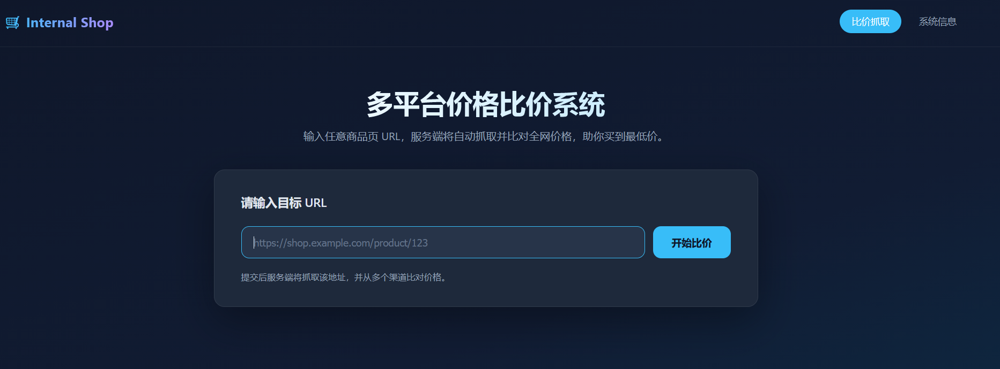
导航里还有一个「系统信息」页 —— 后面就是从这里拿到内部接口的。
解题过程
Step 1：从两个页面提取信息
首页是一个 URL 输入框，右上角有两个入口：「比价抓取」和「系统信息」。
先进「系统信息」，页面上直接写了内部服务接口文档：
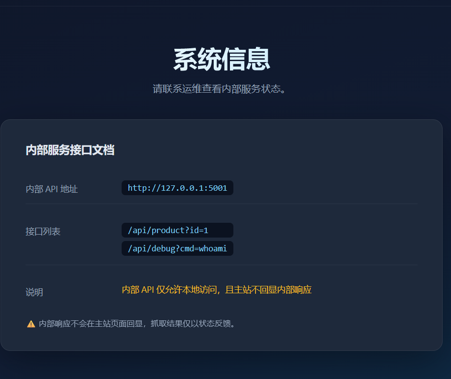
内部 API 地址 http://127.0.0.1:5001
接口列表 /api/product?id=1
/api/debug?cmd=whoami
说明 内部 API 仅允许本地访问，且主站不回显内部响应
两条信息很关键：
Step 2：直接打 127.0.0.1 — 失败
既然比价功能是"服务端抓取 URL"，那它就是天然的 SSRF 入口。直接把目标换成内部地址：
返回：
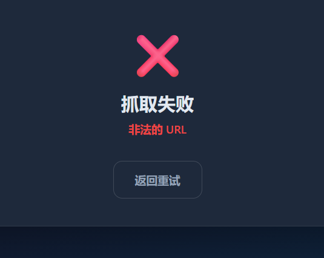
说明 127.0.0.1 被黑名单挡了。
Step 3：换一个写法绕过 — 成功
127.0.0.1 有很多等价写法，只要目标解析到同一个地址、但不命中黑名单里的字符串就行：
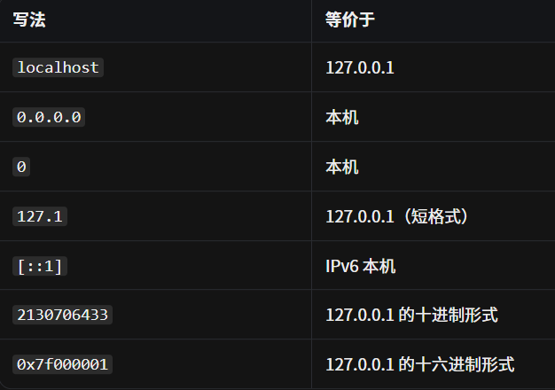
这里我用的是 127.1：
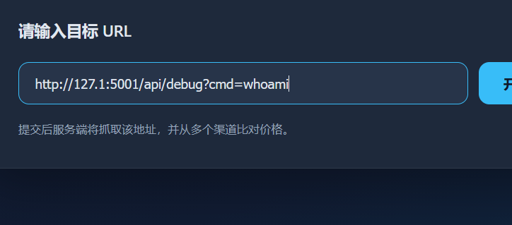
抓取成功了：
但页面只说"已完成比价，结果稍后通过邮件发送" —— 内部响应确实不回显。
Step 4：把结果带出来 — 重定向写到静态目录
既然拿不到回显，那就让内部命令自己把结果写到主站能访问到的地方。
static 这个目录是在源码里看到的：
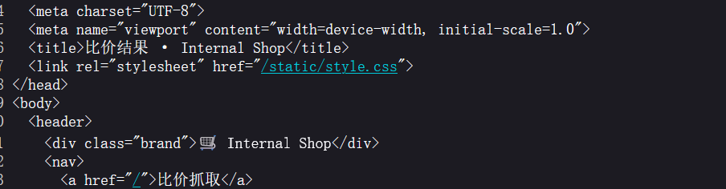
构造 payload，把命令输出重定向进去：
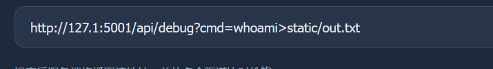
然后直接访问 out.txt。
Step 5：输出里混进了 Debug — 需要闭合前一句
看 out.txt 时发现，命令的输出和 Debug 字样被一起打印了出来。所以猜测后端大概是：
也就是说，我传的 >static/out.txt 会把整个 echo 的结果改写进文件，而不只是命令输出。
所以要先把前面那句截断，让重定向只作用于我自己的命令：
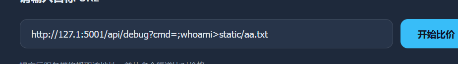
闭合之后输出就干净了：
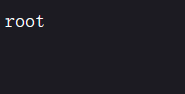
Step 6：换命令找 flag — 先查环境变量
能写文件、能读文件，接下来就是找 flag。先查环境变量（比翻目录快）：
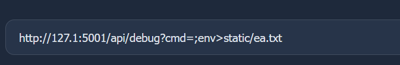
在 ea.txt 里找到了：
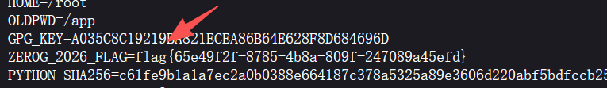
解题思路总结
首页只有 URL 输入框
→ 进「系统信息」页，读到内部 API：127.0.0.1:5001 与 /api/debug?cmd=
→ 直接填 127.0.0.1，被判定为"非法的 URL"
→ 换成 127.1（同一地址的等价写法），抓取成功
→ 但页面不回显内部响应（题目明说了）
→ 用命令重定向把结果写进 static/ 目录，再直接访问该文件
→ out.txt 里混着 Debug 字样，说明前面有 echo
→ 用 ; 截断前一句，输出变干净（root）
→ 换 env 命令，拿到 ZEROG_2026_FLAG
漏洞原理
① SSRF：服务端替我去请求
比价功能必须由服务端抓取 URL，这个"抓取"没有限制目标 —— 于是可以把目标指向只有服务器自己能访问的 127.0.0.1:5001。
② 黑名单只匹配字符串，不匹配语义
127.1 是 IPv4 的短格式，解析器会自动补全成 127.0.0.1。黑名单拦的是写法，不是地址。
③ 无回显：把输出换成"写入可访问路径"
④ 闭合：输出里混了别的东西，说明它被包在一句话里
看到 Debug: 和命令结果一起出现，就知道后端大概在做字符串拼接。; 把前一句结束掉，重定向才只作用于我的命令。
关键知识点
| 知识点 | 说明 |
|---|---|
| 信息收集 | 「系统信息」页直接给出内部 API 与接口列表，比爆破快 |
| SSRF | 服务端抓取功能可指向内网地址 |
| 黑名单绕过 | 127.1 / 0 / 0.0.0.0 / [::1] / 十进制 / 十六进制 都等价于 127.0.0.1 |
| 无回显处理 | 命令输出重定向到 web 可访问目录，再直接访问文件 |
| 语句截断 | 输出混入拼接内容时，用 ; 结束前一句再执行自己的命令 |
| 找 flag 顺序 | 先 env（快），再 ls /、find / -name "*flag*" |